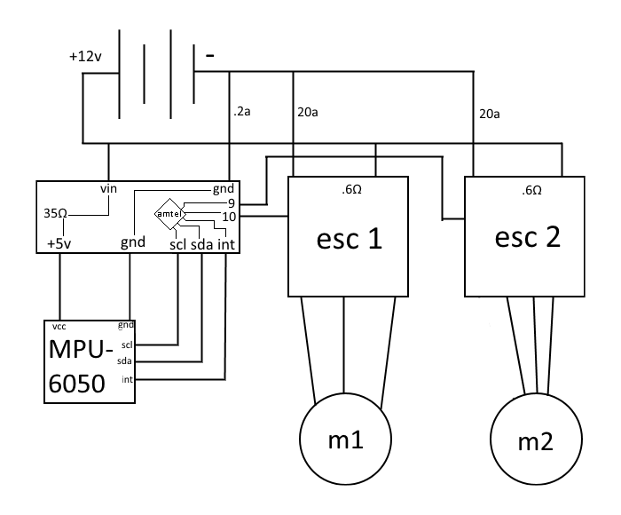

Hot Box uses a 12 volt, 2100mah Lithium Polymer battery, which splits to power the Arduino Nano and the two motor controllers. The motor controllers provide power in pulses to the motors to spin them with large amounts of torque. The MPU-6050 accelerometer and gyro gets power from the Arduino, which provides 5v. The arduino is grounded with all the devices and controlls the motor controls with PWM signals, and receives data from the MPU through an I2C connection
Since the motors within the box are rotating weights at an axis of rotation that is not at its center of mass, its equal and opposite counterforce exerts a torque on the box itself, resulting in a rotational velocity for the box in the same direction as the rotation as the weight. The force that acts on the weight exerts and equal force on the box itself. Since the resulting torque exceeds the rotational inertia of the box, the box rotates on a vertex, initially slow in angular velocity but gradually increasing until the box’s leading edge becomes the next axis of rotation for the next rotation cycle.
The torque produced by the motor causes work in an angular sense and in a linear sense. The torques acting on the box cause it to displace angularly. It displaces ninety degrees per cycle, with a power than is expressed as a ratio of the amount displaced angularly to the time taken to complete the rotation. Its linear displacement is caused by the rotation of the box, and its power is not constant due to its irregular linear velocity and thus inconsistent linear work.
At the beginning of its rotation, the rotational and kinetic energies of the box are at its lowest points, having little kinetic energy and no potential energy. As the box displaces angularly, the kinetic energy of the box remains relatively stable, as its angular velocity remains relatively stable. Its potential energy due to gravity steadily increases, as the leading edge of the box and the cube’s center of mass increase in height above the fulcrum. At the point where the box has displaced forty-five degrees, the potential energy of the box is at its greatest, as this is the maximum height of the box’s center of mass. Past this point, the kinetic energy of the box increases as potential energy is converted to kinetic energy. At the point where the box’s leading edge reaches ninety degrees of rotation, it has the highest angular velocity and thus the greatest kinetic energy.
The reason that the box rotates is that the friction that the vertex that serves as the box’s fulcrum is immobile linearly due to the friction that exists between the vertex and the floor. This friction opposes the torques acting upon the box, but since this fulcrum is not through the center of mass for the box, it produces a rotation around this fulcrum. This torque cancels partially the force of gravitation acting upon the box, and this opposition to gravity results in an accumulation of potential energy from the electric motors and thus an increase in kinetic energy that is not merely conserved, since the electrical energy that is converted is constantly either being converted into kinetic energy or potential energy, the box’s total energy is constantly increasing, resulting in a constant increase in velocity if it is rotating in the same direction for more than one cycle of rotation. To avoid unintentional rotation, the motors of the box are often switching their directions of rotation to produce torques which limit this velocity and thus the tendency to over-rotate and interfere with the programmed movements of the box.